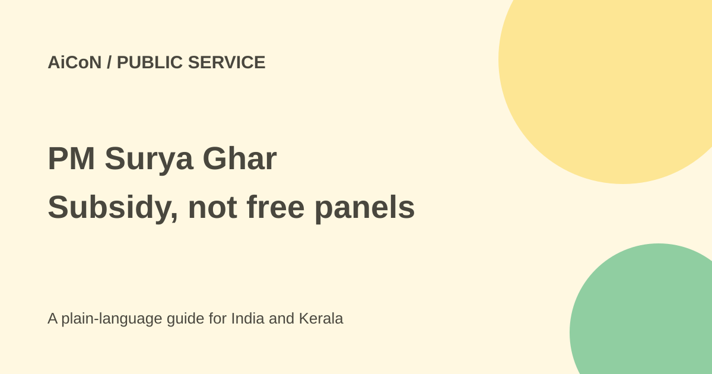

PM Surya Ghar: rooftop solar subsidy and Kerala steps
PM Surya Ghar supports residential rooftop solar. The subsidy helps pay for a solar system; it is not a free panel kit or an automatic 300-unit credit on every electricity bill.

What does the scheme provide?
PM Surya Ghar Muft Bijli Yojana supports grid-connected rooftop solar for residential consumers. The scheme aims to help households generate electricity and reduce bills. The 300-unit headline refers to the intended benefit of solar generation, not an unconditional monthly allowance for everyone who registers.
The published central subsidy figures are ₹30,000 for 1 kW, ₹60,000 for 2 kW and ₹78,000 for 3 kW or larger eligible home systems. The central household subsidy is capped at 3 kW. A larger system can cost more without increasing that cap. Confirm the amount approved for your installation before accepting a vendor quote.
Who should check eligibility?
The government's scheme explainer requires an Indian citizen with a suitable owned roof, a valid electricity connection and no earlier solar-panel subsidy. A March 2026 update describes access for residential consumers with a grid-connected local electricity distributor connection. Kerala consumers should use the correct KSEB account and consumer details.
A rented roof, shared building, earlier subsidy or a non-residential connection needs specific review. Do not assume a shop, college or factory gets the same household subsidy. KSEB's FAQ says the central residential assistance is not available to the other sectors it lists.
Application steps
- Start at the official PM Surya Ghar portal. Select the correct state and electricity distributor.
- Register with the requested consumer number, mobile and other details. Keep the electricity bill ready.
- Apply through the portal and follow its current approval requirements. Do not install first and assume eligibility later.
- Select a registered vendor and compare itemised quotes, equipment, warranty and maintenance.
- After installation, submit plant details and complete the required net-meter process.
- Complete distributor inspection and commissioning requirements.
- Submit the required bank details and cancelled-cheque evidence through the portal for subsidy processing.
Older instructions required feasibility approval before installation. The March 2026 government update says technical feasibility was waived and automatic load enhancement introduced up to 10 kW. Follow the current portal and distributor requirements for your case rather than a copied old checklist.
What does it cost in Kerala?
Registration does not make the system free. Ask for the full installation price, the subsidy expected, your remaining payment, any loan interest and charges for extra site work. Roof strength, shading, equipment quality and meter requirements affect the choice.
Compare solar generation with your actual consumption. Weather, shading and system condition affect output. Fixed charges and other billing rules can remain. Do not accept a guaranteed zero-bill or fixed payback promise without a written explanation of the assumptions.
Safety and timing
Use the national portal's registered-vendor information and verify local requirements with KSEB. Do not pay a stranger for a special subsidy allocation or share an OTP over a call. Bank details needed for the real subsidy should go through the official process.
The 2026 government report gives an average processing time around 15 days after a correct redemption request, not a guaranteed deadline for every applicant. Installation, meter work, inspection and corrections can add time. No current bank loan rate was verified here; compare the actual loan offer rather than an old promotional rate.
What changed since the original AiCoN post?
The original highlighted up to 300 free units. This guide explains the installation cost and conditions behind that phrase, the subsidy cap, commissioning steps and newer approval simplification. The national portal returned a blank body during our check, so step guidance is based on official government explainers and must be matched to the current application screen.
Frequently asked questions
Are panels completely free?
No. The subsidy supports an eligible paid installation.
Does every system get ₹78,000?
No. That is the stated cap; smaller eligible systems have lower support.
Will registration alone reduce my bill?
No. Solar must be installed and commissioned, with billing handled under the distributor's rules.
Sources: Official application portal · Government scheme and steps · March 2026 approval and processing update · KSEB solar FAQ. Checked 7 October 2026.